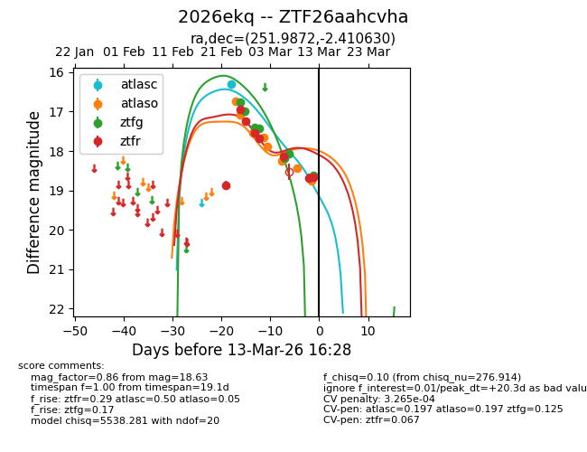
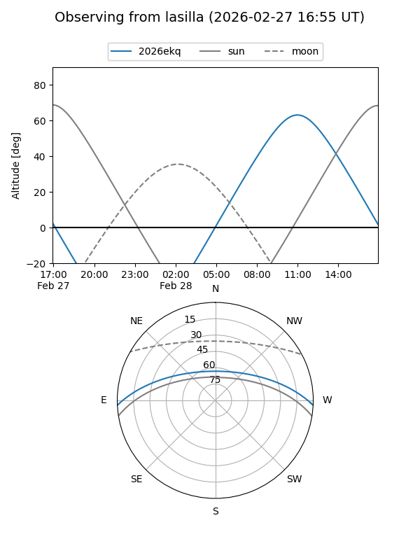
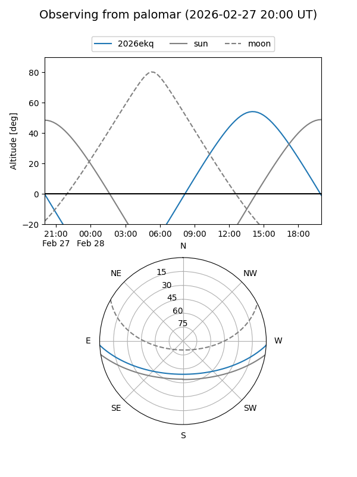
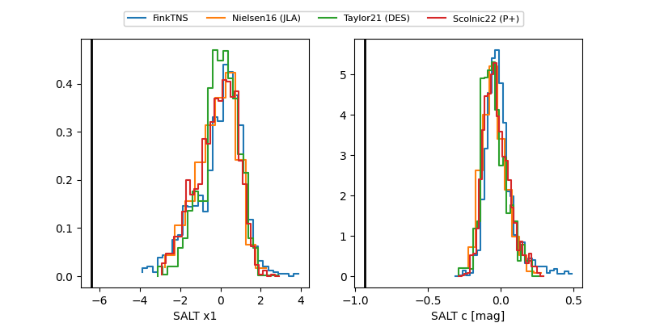

2026ekq
Target 2026ekq at 2026-03-13 16:30
Aliases and brokers:
FINK: link
Lasair: link
ALeRCE: link
TNS: link
YSE: link
alt names
ZTF26aahcvha (ztf,fink_ztf)
2026ekq (tns,yse)
Coordinates:
equatorial (ra, dec) = 251.9872,-2.41063
equatorial (HMS+DMS) = 16:47:56.93,-02:24:38.27
galactic (l, b) = (15.3822,+25.91852)
Flags:
likely cv
Photometry:
last atlasc=16.30, atlaso=18.75, ztfg=18.63, ztfr=18.66
1 atlasc, 8 atlaso, 7 ztfg, 8 ztfr detections
Lightcurve

Visibility


Additional plots
